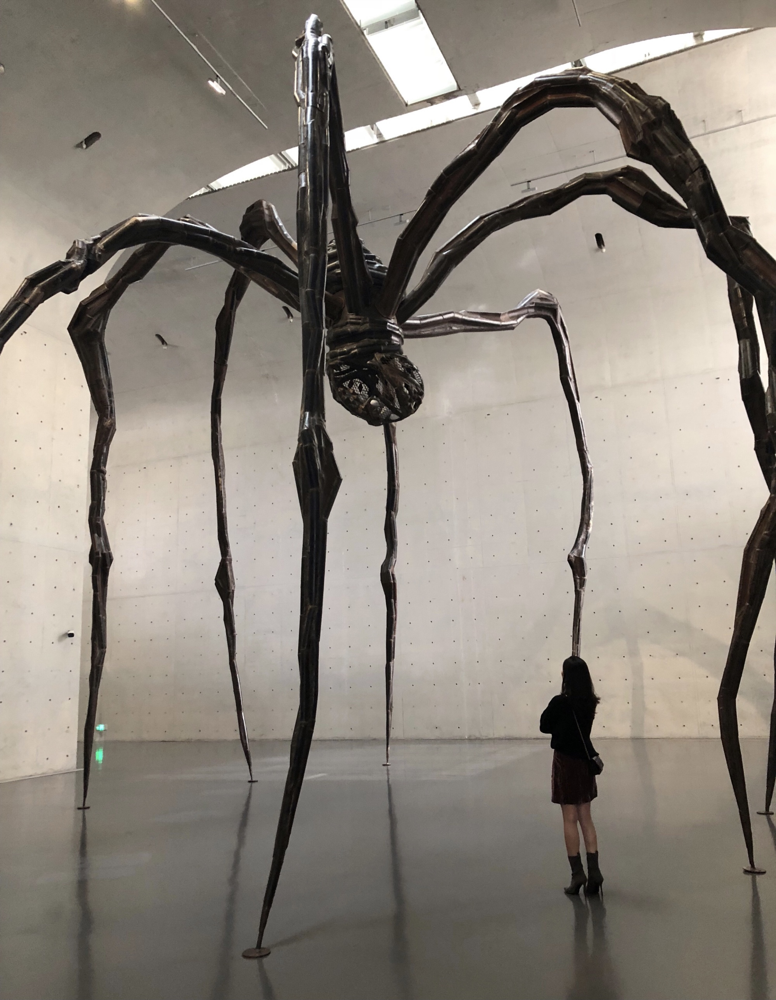
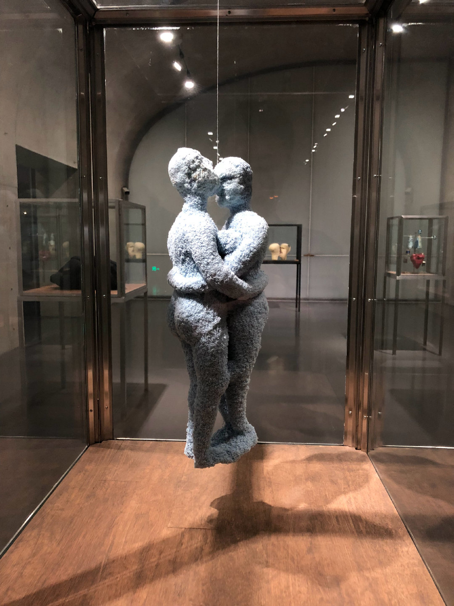
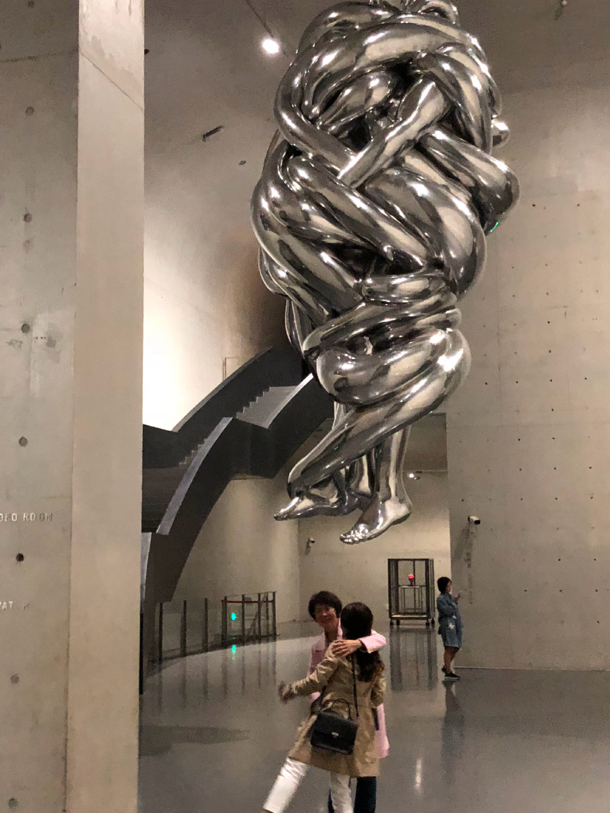

Welcome to my favorite year -- 2018!
In 2018, I was 20 years old, and it was one of the best years of my life. In that year, I experienced a lot, including travel, eating good food, learning about local culture, and meeting nice people. During the past two years, we have experienced a pandemic that has altered the way we live. The purpose of this site is to preserve all the memories and remember this beautiful year in the future.
  
In Shanghai, I visited the Long Museum to see Louise Bourgeois's solo exhibition, "Eternal Threads," which substantiated my point that one's upbringing and family of origin have a considerable effect on one's character and how one views the world later in life. Louise's works, which are presented in a number of fabrics later in her life, take us back to her childhood memories and upbringing from another perspective, so we can safely say that our parents are the first ones who open our eyes.